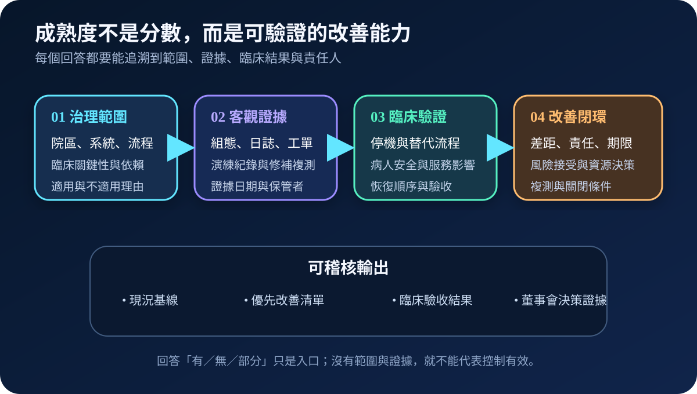
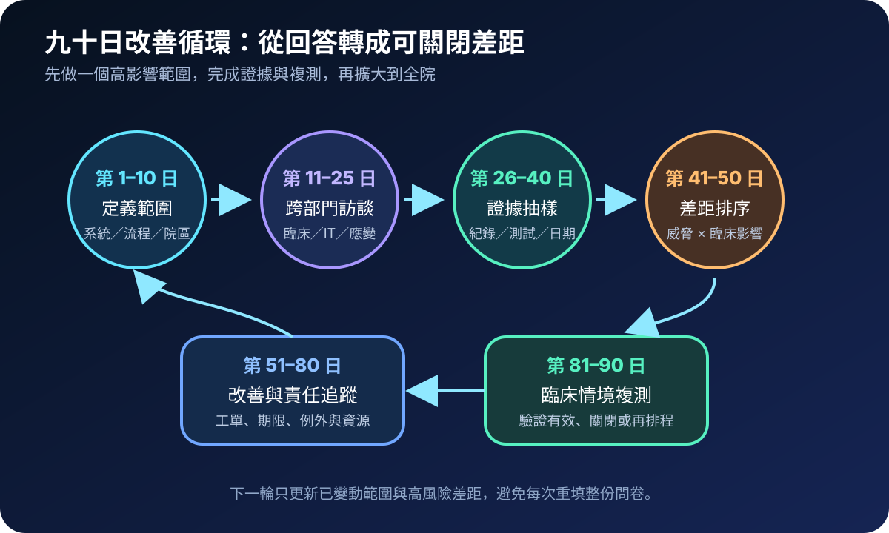
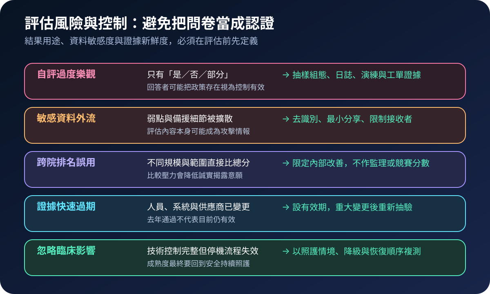

醫療資安國際觀察 · 2026-10-08
醫院資安成熟度如何避免只填問卷：從自評到改善證據
作者：Dr. William｜醫療資訊與資安治理實務工作者
成熟度評估的價值不在總分，而在於找出哪一項臨床關鍵能力缺少有效證據、由誰改善、何時複測，以及風險未關閉前如何維持安全照護。
名詞解釋：姿態、成熟度與改善證據
資安姿態描述特定時間點的控制與曝險狀態；成熟度評估組織是否能持續規劃、執行、監測與改善；改善證據則是組態、日誌、工單、演練、臨床驗收及複測結果。政策存在只能證明已設計控制，不能單獨證明控制有效。
國際現況與適用邊界
美國 HHS ASPR TRACIE 於 2026 年列出院級醫療資安自評工具，採「是、否、部分、不適用」盤點資安衛生、弱點、事件應變、備援與臨床持續運作。文件明確說明工具屬自願性質，不用於監理、跨院比較或評分；結果若與醫療聯盟分享，應先去識別。
WHO 歐洲區 2025 年方法提供醫療機構資安成熟度評估與優先改善的結構。歐盟委員會醫院與醫療服務提供者資安行動計畫另把成熟度評估列入 2025–2026 行動；ENISA 於 2026 年 10 月 7 日的 eHealth Security Conference 持續討論該行動計畫。這些工具與政策適用於各自法域與計畫，不構成台灣醫院的直接法定義務。
台灣適用原則：可借鏡其評估結構，但題目、證據與門檻須依台灣法令、主管機關要求、院級風險、系統架構及臨床流程調整；外國分數不可直接轉成台灣合規結論。
規劃：先限制用途，再決定題目
評估章程應先寫明目的、院區與系統範圍、資料敏感度、接收者、保存期限及不得使用的情境。角色至少包含治理負責人、臨床代表、資訊、資安、醫工、緊急應變、法遵與關鍵供應商窗口。驗收條件不是完成率，而是高風險差距均有責任人、期限、暫時控制、資源決策及複測條件。
實作：九十日完成一個閉環
- 定義範圍：從一項高影響服務或一個院區開始，標記依賴與排除理由。
- 跨部門訪談：由實際操作、維運與應變人員共同回答。
- 證據抽樣：驗證最近的組態、日誌、工單、演練與復原紀錄。
- 差距排序：合併主動威脅、外部曝險、臨床後果與修復可行性。
- 改善追蹤：建立工單、責任、期限、暫時控制與風險接受紀錄。
- 臨床複測：用停機、隔離、備援與恢復情境確認控制有效後再關閉。

風險：問卷本身也需要治理
主要失敗模式包括把政策文件當成有效證據、用單一總分比較不同規模醫院、把弱點與備援細節廣泛流通、證據過期仍沿用，以及只驗證技術控制而忽略臨床降級。評估資料應分級、最小分享、設定有效期，並在重大系統或供應商變更後重新抽驗。

可執行清單
- 是否明確記錄評估範圍、排除項目與理由？
- 每個「已完成」回答是否至少有一項近期客觀證據？
- 高風險差距是否有責任人、期限、暫時控制與複測條件？
- 評估內容是否依敏感度限制分享並設定保存期限？
- 是否禁止用總分作跨院排名、監理替代或採購宣稱？
- 技術改善是否以臨床停機、降級與恢復情境驗證？
來源
- HHS ASPR TRACIE｜2026 Health Care Facility-Level Cybersecurity Assessment（發布年度：2026；查閱：2026-10-08）
- WHO Europe｜Cybersecurity maturity assessment for healthcare delivery organizations（發布：2025-03-19；查閱：2026-10-08）
- European Commission｜European action plan on the cybersecurity of hospitals and healthcare providers（啟動：2025-01；查閱：2026-10-08）
- ENISA｜11th eHealth Security Conference（活動：2026-10-07；查閱：2026-10-08）
內容說明
本文依健康台灣深耕計畫相關治理內容整理，並參考 HHS、WHO、歐盟委員會與 ENISA 公開資料，提出醫院資安成熟度評估的證據與改善框架；不把外國工具或政策視為台灣法定義務，也不取代主管機關公告、院內風險評估、稽核或法律意見。